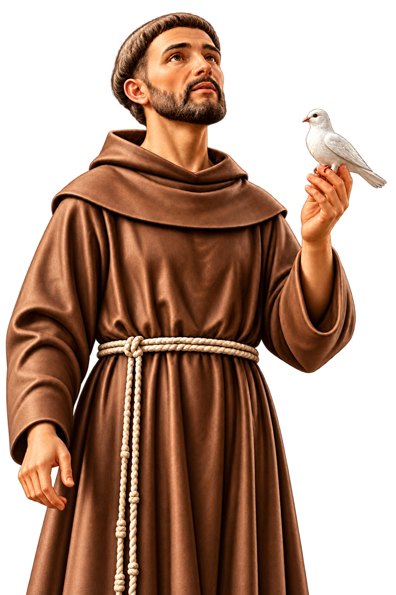
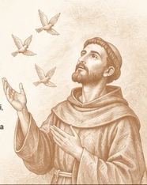
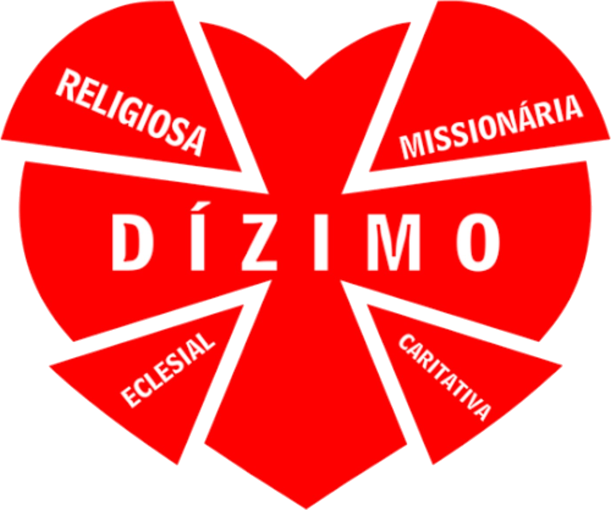

“Senhor, fazei-me
instrumento
de vossa paz.”― ✧ ―
COMUNIDADE CATÓLICA
São Francisco
de Assis
Barra do Saí, Itapoá/SC
Paz e Bem!
Programação semanal
Participe conosco!


NOSSA COMUNIDADE
Um lugar de fé,
oração, fraternidade
e serviço.
Eventos e avisos
Acompanhe os próximos encontros da nossa comunidade.
Galeria de fotos
Momentos que marcam a nossa caminhada.
Nenhuma foto nesta categoria por enquanto.

PARTILHA E GRATIDÃO
Dízimo e doações
Um gesto de amor.
Uma missão que continua.
Seu gesto de fé e generosidade ajuda a sustentar a evangelização, as celebrações e os serviços da nossa comunidade.
Contribua com seu dízimo ou faça uma doação pelo Pix.
O QR Code e a chave de e-mail correspondem ao mesmo Pix.
Localização e contato
Venha nos visitar. Será uma alegria recebê-lo!
Nosso endereço
Rua Benjamin Constant, S/N
Barra do Saí – Itapoá/SC